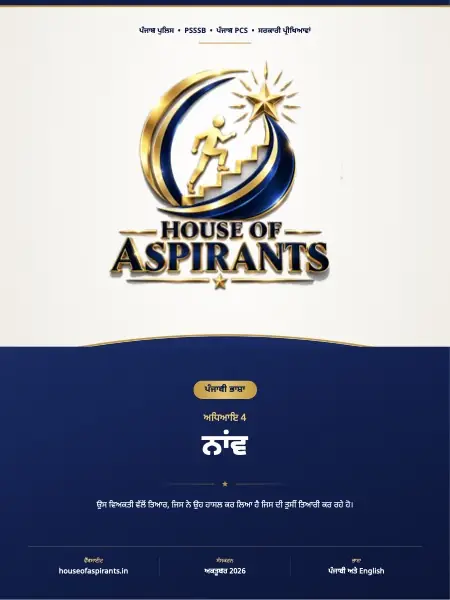

Finished reading? Check what you remember with a quick MCQ test.

Summary
ਅਧਿਆਇ 4 ਨਾਂਵ Noun ਇਸ ਅਧਿਆਇ ਵਿੱਚ ਨਵ @ਕੀ 9Hਹੈ? (\> ਨਵ &@ਦੀਆਂ ? ਕਿਸ.\>ਮ(?q ਨਿੱਜ5\>ਵਾਚਕ \>ਜ <\>ਖ਼ਾਸ (\>ਨਵ(\> ਨਾਂਵ @ਕੀ 9Hਹੈ? (\> ਨਾਂਵ &@ਦੀਆਂ ? ਕਿਸਮਾਂ ਨਾਂਵ &@ਦੀ ? ਕਿਸਮ ਪਛਾਣਨ &@ਦੀ ਤਰਕੀਬ ਅਭਿਆਸ \*M0ਪਸ਼ਨ ਮੁੱਖ ਗੱਲ ਕਿਸੇ 5? ਵਿਅਕਤੀ, @ਜੀਵ, %\>ਥਾਂ, ਵਸਤੂ, ਪਦਾਰਥ, Aਗੁਣ, -\>ਭਾਵ \>ਜਾਂ 9\>ਹਾਲਤ &Gਦੇ (\>ਨਾਂ (Bpਨੂੰ (\>ਨਾਂਵ ਕਹਿੰਦੇ ਹਨ।
Download
Download Chapter 4: ਨਾਂਵ (Noun) (Punjabi) (PDF) - 2.4 MB, 9 pages, hosted on this site. No sign-up, no email wall and no redirect through a third party.
About this file
- File name:
ਨਾਂਵ.pdf - Pages: 9
- Size: 2.4 MB
- Published: 6 October 2026
- Filed under: Study Material
Where this file sits
- Subject: Punjabi
- Language: Punjabi (ਪੰਜਾਬੀ)
- Chapter: Chapter 4: ਨਾਂਵ (Noun)
This page was generated automatically from content/study-material/punjabi/punjabi /04 - ਨਾਂਵ (Noun)/. Its subject, language and chapter come from the folders the file sits in, its part number from its place among the files beside it, and its title, slug and description from those. The page count and the summary were read out of the PDF itself - the file is the document.